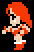
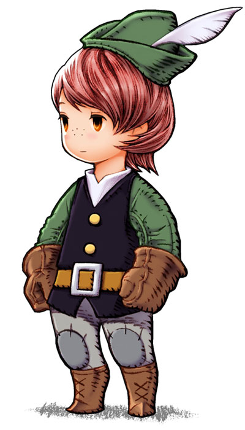
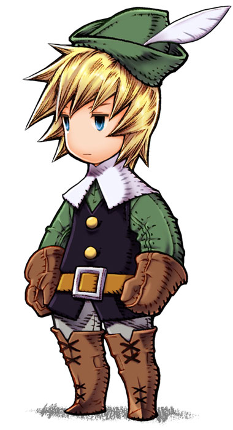
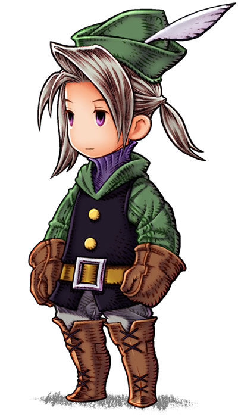
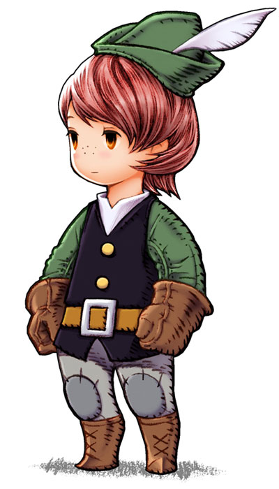
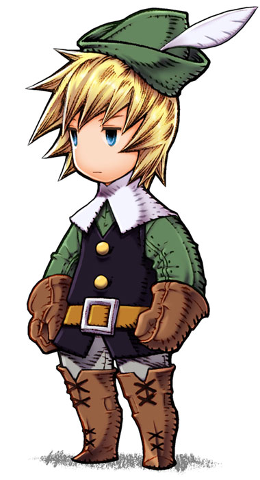
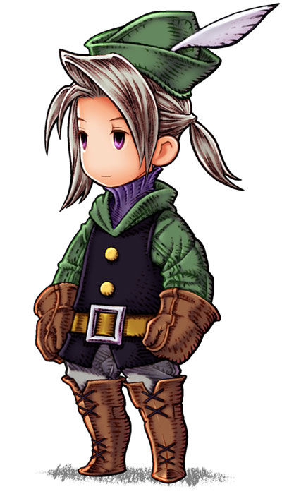
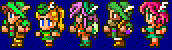

Archer
Appearances: FF2, FF3, FF4, FF11, FFT, FF12RW, FFTA, FFTA2
Aliases: Hunter, Ranger
Archers equip bows and arrows and often resemble Robin Hood. Their high accuracy and ranged attacks make them effective from a distance or the back row. Archers usually come with the ability to Aim, which delivers a highly accurate attack at the cost of time or power. Their defense or magic is lacking, so they keep out of trouble by keeping away from the fight. Usually their effectiveness is coupled with some other form of offense, like status attacks or weak magic.
Similar Job Classes: Gunner
Expand All Images | Collapse All Images
| FF2 |
|  |
| NAME: Maria |
| OVERVIEW: Weapons and armor stated is initial equipment. |
| WEAPONS: Bow |
| ATTRIBUTES: Low HP
|
|
| FF3 |
   |
| NAME: Hunter |
| OVERVIEW: Though other classes can equip a bow, Hunter has the greatest accuracy. The bow and arrow is a two handed weapon, thus the Hunter cannot equip shields. |
| WEAPONS: Great Bow, Killer Bow, Rune Bow, Yoichi Bow, Wooden Arrow, Iron Arrow, Holy Arrow, Fire Arrow, Ice Arrow, Bolt Arrow, Yoichi Arrow |
| ABILITIES/MAGIC:
Fight - Attack with equipped weapon
Magic - Cast magic spell
Defend - Increase defense for one turn
Item - Use an item from inventory
|
| ATTRIBUTES: High strength, high agility, low magic
|
|
| FF4 |
  |
| NAME: Rosa Farrell |
| OVERVIEW: Rosa is technically a White Wizard, but uses the Aim ability. |
| WEAPONS: Uses bow & arrow best |
| ABILITIES/MAGIC:
Pray - Small amount of HP restored to entire party
Aim - Focus arrows for better accuracy
White - Cast White Magic
|
| ATTRIBUTES: High magic, low strength |
|
| FF5 |
|  |
| NAME: Hunter / Ranger |
| OVERVIEW: Ranger can call on forest animals to deliver various effects like causing damage and healing HP. No other class in this game can equip bows. |
| WEAPONS: Knives, Bows |
ABILITIES/MAGIC:
Animals - Call upon animals for assistance
!Aim - Attack with 100% hit rate, but slightly more time to perform and less damage (default)
Equip Bows - Equip any bow despite job class
!X-Fight - Shoot four times at random targets in one turn. Each shot does less damage.
Animals: Mysidian Rabbit, Squirrel, Bee Swarm, Nightingale, Momonga, Falcon, Skunk, Wild Boar, Unicorn |
| ATTRIBUTES: High strength, low magic
|
|
| FF11 |
  |
| NAME: Ranger |
| OVERVIEW: Highly effective in this game due to their status effects and ranged attacks. They have the ability to see for great distances and hide when necessary. |
| WEAPONS: Uses bows, crossbows, and guns best |
| ABILITIES/MAGIC:
Eagle Eye Shot - Powerful ranged attack
Sharpshot - Increase ranged accuracy
Camouflage - Become hidden from enemies
Barrage - Fire multiple shots
Shadowbind - Root enemy in place
Unlimited Shot - Allows next ranged attack without using ammunition
|
| SUPPORT ABILITIES: Resist Poison, Accuracy Bonus |
| ATTRIBUTES: High accuracy, high damage output, low evasion, low defense |
|
| FF12RW |
 |
| NAME: Archer / Ballista / Fran |
| OVERVIEW: Only enemy vieras can be archers, but Fran holds her own as well. |
| WEAPONS: Bows |
ABILITIES/MAGIC (Archer):
Shadowbind (Immobilize enemy)
Steady Shot (Increase ranged attack)
Camouflage (Turn group invisible)
Barrage (Shoot several shots at once)
Remedy (Heal status ailments)
ABILITIES/MAGIC (Fran):
Blinding Arrow (Blind enemy)
Sleep Arrow (Put enemy to sleep)
Silencing Arrow (Silence enemy)
Confusion Arrow (Confuse enemy)
Dispela (Remove positive status)
Barrage (Shoot several shots at once)
Ward of the Wood (Restore HP and status to allies in range)
|
|
| FF: Tactics |
   |
| NAME: Archer |
| OVERVIEW: Although other classes can equip bows, Archer has greater accuracy, charge attacks, and abilities to increase hit rate |
| WEAPONS: Bow, Crossbow |
ABILITIES/MAGIC:
Aim:
Aim +1 - Increase charge power by 1
Aim +2 - Increase charge power by 2
Aim +3 - Increase charge power by 3
Aim +4 - Increase charge power by 4
Aim +5 - Increase charge power by 5
Aim +7 - Increase charge power by 7
Aim +10 - Increase charge power by 10
Aim +20 - Increase charge power by 20
Reaction Abilities: Adrenaline Rush/Speed Save (PSX) - raise speed; Archer's Bane/Arrow Guard (PSX) - evade bow/crossbow attacks
Support Abilities: Equip Crossbow, Concentration/Concentrate (PSX) - reduce target enemy's evasion to 0%
Move Abilities: Jump +1
|
| ATTRIBUTES: Low MP |
|
| FF: Tactics Advance |
    |
| NAME: Archer |
| OVERVIEW: Archers have a variety of abilities dealing with weak, but debilitating attacks. |
| WEAPONS: Bow |
ABILITIES/MAGIC:
Aim:
Boost - Increase damage of next attack
Aim: Legs - Immobilize target for three turns
Aim: Arm - Disable target for three turns
Cupid - Charm target
Burial - Banish undead
Take Aim - High accuracy, low damage
Faster - Ignore R-Abilities
Blackout - Blind target
Reaction Abilities: Block Arrows - Dodge bow attacks
Support Abilities: Concentrate - Raise hit rate
Combo: Bow Combo
|
| ATTRIBUTES: |
|
| FF: Tactics Advance |
  |
| NAME: Hunter |
| OVERVIEW: An upgraded version of the FFTA Archer, these have more critical and powerful attacks. |
| WEAPONS: Greatbow |
ABILITIES/MAGIC:
Hunt:
Sonic Boom - Area damage
Oust - Sweep monsters off field
Advice - Raise critical hit rate of target
Aim: Vitals - Cause random status ailment
Hunting - Receive 10 JP if monster is killed
Addle - Addles monster
Ultima Shot - Triple damage
Sidewinder - Heavy damage
Capture - Capture weakened monster
Reaction Abilities: Auto-Regen - Heal HP when attacked
Support Abilities: Weapon ATK+
Combo: Hunt Combo
|
| ATTRIBUTES: |
|
| FF: Tactics A2 |
      |
| NAME: Archer |
| OVERVIEW: Archers have a variety of abilities dealing with weak, but debilitating attacks. |
| WEAPONS: Bow |
ABILITIES/MAGIC:
Precision:
Focus - Increase damage of next attack
Leg Shot - Immobilize target for three turns
Arm Shot - Disable target for three turns
Cupid - Charm target
Burial - Banish undead
Take Aim - High accuracy, low damage
Lightning Strike - Ignore R-Abilities
Blackout - Blind target
Reaction Abilities: Archer's Bane - Dodge bow attacks
Support Abilities: Concentration - Raise hit rate
|
|
| FF: Tactics A2 |
      |
| NAME: Hunter |
| OVERVIEW: An upgraded version of the FFTA2 Archer, these have more critical and powerful attacks. |
| WEAPONS: Bow |
ABILITIES/MAGIC:
Trapping:
Sonic Boom - Area damage
Oust - Sweep monsters off field
Advice - Raise critical hit rate of target
Vitals Shot - Cause random status ailment
Hunting - Receive 10 JP if monster is killed
Counter Force - Addles monster
Ultima Shot - Triple damage
Sidewinder - Heavy damage
Reaction Abilities: Regenerate - Heal HP when attacked
Support Abilities: Attack Up
|
|
Traits of Archer in Other Games
| FF6: The Offering accessory allows an attack to hit four times, like FF5's S Shot/X-Fight. |
| FF6: The Sniper Sight accessory increases accuracy. |
| FF10: There is an "Aim" ability which increases the accuracy of the party, but does not do damage. Wakka typically earns this first. |
Final Fantasy, all games and animation bearing the Final Fantasy name, and all characters in said games or animation are copyright their respective creators, including but not limited to Squaresoft, Square Enix, Square EA, Tokyo TV, and ADV Films.
 Characters
Characters Places
Places Stories
Stories Species
Species Organizations
Organizations Glossary
Glossary Transportation
Transportation Monsters
Monsters Jobs
Jobs Summons
Summons Items
Items Magic/Skills
Magic/Skills Weapon Types
Weapon Types In-Crossovers
In-Crossovers Ex-Crossovers
Ex-Crossovers Release Dates
Release Dates Name Origins
Name Origins Famous Moments
Famous Moments Music Database
Music Database Features
Features Game Help
Game Help Game Evolution
Game Evolution Square Art
Square Art Fan Flash
Fan Flash Final Fantasy Forums
Final Fantasy Forums Updates
Updates Site Info
Site Info Feedback
Feedback Full Index
Full Index Links
Links Staff
Staff